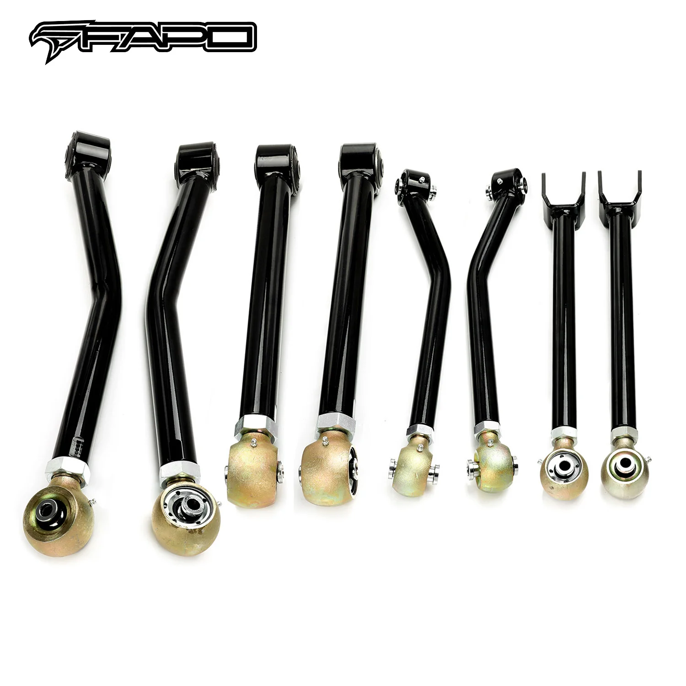

1 / 11Adjustable wahaczs Do Jeep Wrangler 07-18 JK 0-6" Lift Kits 8PCS FZ060110+FZ060120+FZ060130+FZ060140
Zastosowanie: Kompatybilny z Jeepem Wranglerem JK z lat 2007-2018 Kompletny zestaw 8 sztuk: PRZÓD: Regulowane górne wahacze dla podnośników 0-6 cala × 2 Regulowane dolne wahacze dla podnośników 0-6 cala × 2 TYŁ: Regulowane górne wahacze dla podnośników 0-6 cala × 2 Regulowane dolne wahacze dla podnośników 0-6 cala × 2 Cechy produktu: Zbudowany z wytrzymałej rurowej stali stopowej, aby wytrzymać wszelkie warunki drog…
Application: Compatible with 2007-2018 Jeep Wrangler JK 8PCS Complete Set: FRONT: Adjustable Upper Control Arms for 0-6" Lifts × 2 Adjustable Lower Control Arms for 0-6" Lifts × 2 REAR: Adjustable Upper Control Arms for 0-6" Lifts × 2 Adjustable Lower Control Arms for 0-6" Lifts × 2 Features: Built from heavy duty tubular alloy steel to withstand any road or off-road conditions Performance proprietary dual layer coating to protect against rust & corrosion Cold resistant rubber bushings for extra endurance OEM control arm replacements to accommodate 0-6" lift kits Perfect combination of performance and durability Improved suspension geometry to reduce bump steer Provides additional built-in positive caster which improves your handling ability The accessories in the photos are included 1-year warranty for any manufacturing defect
2699,99 PLN
Opis produktu
Zastosowanie:
- Kompatybilny z Jeepem Wranglerem JK z lat 2007-2018
Kompletny zestaw 8 sztuk:
- PRZÓD:
- Regulowane górne wahacze dla podnośników 0-6 cala × 2
- Regulowane dolne wahacze dla podnośników 0-6 cala × 2
- TYŁ:
- Regulowane górne wahacze dla podnośników 0-6 cala × 2
- Regulowane dolne wahacze dla podnośników 0-6 cala × 2
Cechy produktu:
- Zbudowany z wytrzymałej rurowej stali stopowej, aby wytrzymać wszelkie warunki drogowe i terenowe
- Opatentowana dwuwarstwowa powłoka o wysokiej wydajności chroniąca przed rdzą i korozją
- Odporne na zimno gumowe tuleje zapewniają dodatkową wytrzymałość
- Zamienniki wahaczy OEM pasujące do zestawów podnoszenia 0-6 cala
- Idealne połączenie wydajności i trwałości
- Ulepszona geometria zawieszenia w celu zmniejszenia nierówności skrętu
- Zapewnia dodatkowe wbudowane pozytywne kółko, które poprawia zdolność obsługi
- Akcesoria widoczne na zdjęciach są wliczone w cenę
- 1 rok gwarancji na wszelkie wady produkcyjne
Application:
- Compatible with 2007-2018 Jeep Wrangler JK
8PCS Complete Set:
- FRONT:
- Adjustable Upper Control Arms for 0-6" Lifts × 2
- Adjustable Lower Control Arms for 0-6" Lifts × 2
- REAR:
- Adjustable Upper Control Arms for 0-6" Lifts × 2
- Adjustable Lower Control Arms for 0-6" Lifts × 2
Features:
- Built from heavy duty tubular alloy steel to withstand any road or off-road conditions
- Performance proprietary dual layer coating to protect against rust & corrosion
- Cold resistant rubber bushings for extra endurance
- OEM control arm replacements to accommodate 0-6" lift kits
- Perfect combination of performance and durability
- Improved suspension geometry to reduce bump steer
- Provides additional built-in positive caster which improves your handling ability
- The accessories in the photos are included
- 1-year warranty for any manufacturing defect
FAPO Polska
Ten produkt obsługujemy lokalnie
Autoryzowana obsługa
FAPO Polska prowadzi katalog, kontakt i zamówienia bez odsyłania klienta do zewnętrznych sklepów.
Dobór po aucie
Sprawdzamy dopasowanie produktu do pojazdu, rocznika i wersji przed finalizacją zamówienia.
Wsparcie po zakupie
Masz kontakt w Polsce w sprawach zamówień, wysyłki, gwarancji i zwrotów.